Créditos
Dirección & Producción
Xhinno Leiva
Producción Ejecutiva
Xhinno Leiva & Patricio Muñoz G.
Producción de campo
Paulina Micelli
Diseño Web
Herbert Spencer
Fotografía & cámara
Pedro Micelli
Sonido
Eduardo Tumayán
Mauricio Hernández
Postproducción imagen
Patricio Muñoz G
Postproducción de sonido
Patricio Muñoz G
Asistentes de producción
Zoé Leiva
Io Manuela de Luna
Participantes
Francisco Méndez Labbé
José de Nordenflycht
Andrés Ureta
Israel Fraiman
Ana María Castellón
Magdalena Dardel
Vera Guzmán
Paola Pascual
Miguel Valderrama
Patricia Soto
Agradecimientos
Paulina Micelli
Isabel Margarita López
Nicolás Méndez
Vicente Méndez Purcell
Quena Aguirre
José de la Vega
Berta Valenzuela
Fernando Pérez
Cristóbal Molina
Jaime Reyes Gil
María de los Ángeles Marchant
Pamela Fuentes
Música
Chasqui
Contracuarteto – Roberto Lecaros
Providencia
Guillermo Rifo - Aquila
Dromedario
Nicolás Verá, Pulso, Litio
El viaje
Guillermo Rifo - Aquila
Aspect of Somnambulism / Sleepwaltzer
G. Graewe, E. Reiseger & G. Hemingway
Fragment 1
Rita Marcotulli
Dreaming of Duke
Piero Umiliani
Cells for Replication
Yadak
Death
Mica Leiv
Sweeter Than the Day
Wayne Horvitz & Four Plus One Ensemble
Instituciones

Escuela de Arquitectura y Diseño de la PUCV

Museo Nacional de Bellas Artes
Material de archivo
Archivo Histórico José Vial Armstrong PUCV
Instituto de Arte PUCV
Archivo Familiar Francisco Méndez
Museo Nacional de Bellas Artes
Archivo Andrés Ureta
Documental Exposición 10 años de Diseño UCV Dragomir Yancovic
Documental UCV 50 años Mario Ferrer - Francisco Méndez
Producción

Dereojo Comunicaciones www.dereojo.cl

PROYECTO FINANCIADO POR EL MINISTERIO DE LA CULTURAS LAS ARTES Y EL PATRIMONIO CONVOCATORIA 2022
Este sitio Web es una iniciativa colaborativa y de código abierto.